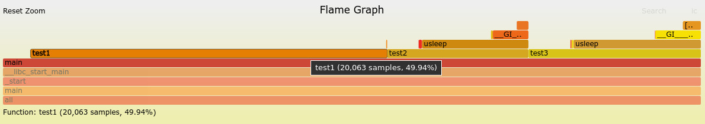
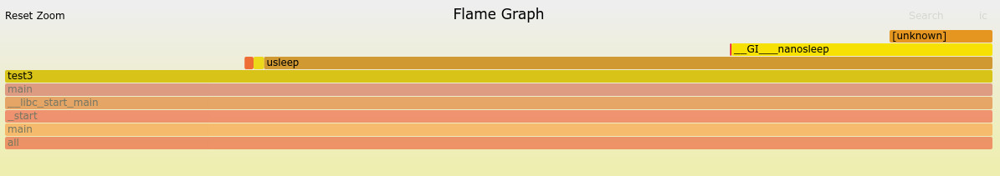

Steward
分享是一種喜悅、更是一種幸福
系統 - Debian - Performance - 如何使用Flame Graphs找出耗時的副程式
參考資料：
https://github.com/brendangregg/FlameGraph
main.c
#include <stdio.h>
#include <stdlib.h>
#include <unistd.h>
void test1(void)
{
for (int x = 0; x < 100; x++);
}
void test2(void)
{
usleep(1);
}
void test3(void)
{
usleep(100);
}
int main(int argc, char** argv)
{
while (1) {
test1();
test2();
test3();
}
}
編譯並且執行
$ gcc main.c -o main -ggdb $ ./main
使用perf量測(自動量測10秒)
$ perf record -ag -s -d --phys-data -e cpu-cycles:u -F 9999 --call-graph dwarf,8192 -p `pidof ./main` -- sleep 10
Warning:
PID/TID switch overriding SYSTEM
[ perf record: Woken up 1187 times to write data ]
[ perf record: Captured and wrote 297.243 MB perf.data (36889 samples) ]
P.S. 使用perf量測時，記得要有debug symbol，不然會無法把副程式解析出來
使用Flame Graphs分析
$ git clone https://github.com/brendangregg/FlameGraph $ cd FlameGraph $ cp ../perf.data . $ perf script > out.perf $ ./stackcollapse-perf.pl out.perf > out.folded $ ./flamegraph.pl out.folded > perf.svg
使用Chrome或者Firefox開啟perf.svg，接著就可以使用滑鼠點選想要看的副程式，X軸代表該副程式使用的百分比，Y軸則是呼叫的順序，下張圖片是司徒將滑鼠移到test1所顯示的數據，test1佔了main副程式的49.94%使用率，test1上方沒有任何副程式，代表它是末端，而test1、test2、test3都是由main呼叫使用，test2、test3還往後呼叫了usleep，

點選test3，可以發現usleep還往後呼叫nanosleep，nanosleep後方因為缺少debug symbol，因此，無法被正確解析出來

P.S. 如要恢復原本的呼叫狀態，只要點選最下方的all即可